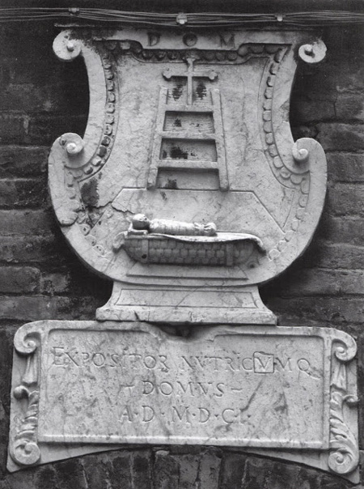

|
| |
Il 13 novembre 1775 l’ospedale di Santa Maria della Scala emana una serie di norme a tutela dei bambini abbandonati e accolti all’interno dell’ente caritativo e delle balie che li crescevano. Venne destinato al reparto delle balie lattanti un medico che controllasse che le stesse allattassero un solo neonato, che la qualità del latte fosse adeguata e che potesse curare i bambini più esposti a malattie nei primi anni di vita. Le balie che allattavano vennero inoltre dispensate dai lavori di pulizia e dal bucato e venne dato loro un vitto speciale. Tutto ciò si rese necessario dal momento che, tra il 1755 ed il 1774, oltre il 70% dei 5700 bambini accolti dall’ente erano deceduti.

La lapide posta sul dormitorio delle balie
via dei Fusari n.48
La criticità di questo reparto dell’ospedale era ben chiara agli amministratori già da tempo. Fin dal rettorato di Agostino Chigi, a cavallo tra il XVI ed il XVII secolo, si assiste, infatti, ad un forte impulso costruttivo che coinvolge il Santa Maria della Scala. Nel 1601 e negli anni successivi, in particolare, le funzioni svolte dalla casa delle balie e da quella dei gittatelli vengono spostate dal corpo principale dell’ospedale ad alcuni edifici già esistenti e adattati alle nuove necessità, posti all’imbocco di strade che proprio a seguito di questa nuova destinazione d’uso prendono in maniera significativa la denominazione toponomastica di Chiasso Ripido delle Balie (oggi vicolo di San Girolamo) e Strada detta delle Balie (ora via dei Fusari).
I nuovi edifici accolsero i neonati con le balie loro destinate e i bambini, che vivevano distinti per sesso ed età. Vennero rifatti, quindi, i dormitori, dotati di letti di ferro divisi da tende, la cucina, il refettorio, la cisterna, venne istituita un’infermeria e vennero creati vari locali di servizio, ad esempio, per l’asciugatura dei panni o il rimessaggio del legname.
Queste misure, evidentemente, non furono sufficienti visto che, nel secolo successivo, la situazione dei gittatelli era, evidentemente, peggiorata.
|

 ACCADDE OGGI
ACCADDE OGGI